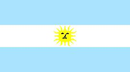
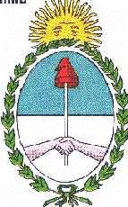

Argentina
|  |  |
Información general
Letra del himno nacionalhimno_22.
Nombre oficial: República Argentina.
Área: 2 779 221 km².
Costas: 4 986 km.
División política:1 Distrito Federal y 23 Provincias
El territorio argentino comprende la parte continental, la parte oriental de La Isla Grande de Tierra del Fuego, que comparte con Chile y reclama una parte de la Antártida, el archipiélago de las Malvinas o Falkland, las Orcadas del Sur, Georgia del Sur, Sandwich del Sur y varias islas al sur de la Tierra del Fuego.
Provincia Capital
- Buenos Aires La Plata
- Catamarca San Fernando del Valle
- Córdoba Córdoba
- Corrientes Corrientes
- Chaco Resistencia
- Chubut Rawson
- Entre Ríos Paraná
- Formosa Formosa
- Juyjuy San Salvador de Juyjuy
- La Pampa Santa Rosa
- La Rioja La Rioja
- Mendoza Mendoza
- Misiones Posadas
- Neuquén Neuquén
- Río Negro Viedma
- Salta Salta
- San Juan San Juan
- San Luis San Luis
- Santa Cruz Río Gallegos
- Santa Fe Santa Fe
- Stgo. del Estero Stgo. del Estero
- Tierra del Fuego Usuhuaia
- Tucumán San Miguel de Tucumán
Unidad monetaria: Peso.
1 Peso = 100 centavos.
Idiomas: Castellano (oficial), araucano, guaraní, quechua, en comunidades específicas puede hablarse italiano, gallego, yiddish, alemán, galés etc.
Fiesta nacional: 9 julio, Proclamación de la Independencia.
Gentilicio: Argentino.
Hora oficial: GMT-3 (normal/verano).
Miembro de: ONU, OEA, ALADI, MERCOSUR.
Curiosidades
Por su superficie Argentina ocupa el segundo lugar en Sudamérica, después de Brasil.
La Pampa al este de la región central, es uno de los rasgos dominantes del paisaje argentino. Las inmensas llanuras argentinas son una de las zonas más fértiles del mundo.
Las cataratas del Iguazú, ubicadas a 20 Km de la unión del río de su mismo nombre con el Paraná (provincia de Misiones) y Brasil son consideradas las más anchas del mundo (4000 metros). En realidad forman una grandiosa precipitación de 275 cascadas, con un caudal que puede alcanzar los 10 600 m³ de agua por segundo, desde alturas que varían entre 40 y 80 metros.
Información adicional en Internet.
Perfil Ecónomico
Perfil Demográfico
Población total: 38.226.000
Densidad de población: 13.5
Perfil Cultural
Alfabetismo: 97 %.
Religión:
- Católicos: 89,9%
- Protestantes: 3,0%
- No religiosos: 2,4%
- Judíos: 2,0%
- Ortodoxos: 0,6%
Algunas figuras notables:
- Jorge Luis Borges (1899-1996). Escritor, poeta y ensayista.
- Raquel Forner (1902). Pintora.
- Carlos Gardel (1887-1935). Compositor e intérprete.
- Alberto Ginastrena (1916). Compositor.
- José Hernández (1834-1886). Poeta.
- Bernardo A. Houssay (1997-1971). Médico.
- Bartolomé Mitre (1821-1906). Escritor y político.
- Domingo F. Sarmiento (1811-1888). Político, educador y escritor.
- Carlos Saavedra Lamas (1879-1959). Premio Nobel de la Paz 1936.
- Adolfo Pérez Esquivel (1931). Premio Nobel de la Paz 1936.
Lugares declarados patrimonio mundial por la UNESCO
- Misiones jesuíticas guaraníes (Sta. María Mayor).
- Misiones jesuíticas guaraníes (Ntra. Sra. del Loreto).
- Misiones jesuíticas guaraníes (San Ignacio Mini).
- Misiones jesuíticas guaraníes (Sta. Ana).
- Parque Nacional Los Glaciares.
- Parque Nacional Iguazú.
Sistema de Gobierno
Constitución vigente: 1853 (enmendada en 1860, 1866, 1898, 1957, 1994).
Sistema ejecutivo: Presidente (elegido para un período de cuatro años por voto popular directo, en doble vuelta y con posibilidades de ser reelegido por un solo período consecutivo; vicepresidente; jefe de Gabinete (nombrado por el presidente); gabinete integrado por ocho ministros; secretarios.
Sistema legislativo: Senado (tres senadores por cada provincia y tres por la ciudad de Buenos Aires, elegidos de forma directa y conjunta por seis años a razón de un tercio renovable cada dos años, correspondiendo dos bancas al partido político con la mayoría de los votos y la restante al partido que les siga); Cámara de Diputados (257 miembros elegidos en forma directa por cuatro años y reelegibles, renovables por mitad cada bienio).
Sistema judicial: Corte Suprema de Justicia (nueve magistrados), cámaras federales y de apelación; jueces federales, ordinarios, de paz.
Gobierno subdivisional: Cada provincia está gobernada por sus propias instituciones y elegible por sufragio directo de adultos su gobernador y legisladores.
Aproximación histórica
Argentina está situada al sudeste de América. Limita por el Norte con Bolivia y Paraguay, con Brasil y Uruguay por el nordeste, con Chile por el oeste, con el Polo Sur por el sur y con el océano Atlántico por el este. Además del territorio nacional continental, comprende la parte oriental de la Isla Grande de Tierra del Fuego y reclama una parte de la Antártida, el archipiélago de las Malvinas o Falkland, las Orcadas del Sur, Georgia del Sur, Sándwich del Sur, varias islas al sur de la Tierra del Fuego y otras en el río Uruguay.
En 1516, los conquistadores españoles, liderados por Juan Díaz de Solís llegaron al Río de la Plata. Buenos Aires fundada en 1580 se convierte en la capital del Virreinato de la Plata. La independencia es proclamada en Tucumán el 9 de Septiembre de 1816, como resultado de la campaña de liberación dirigida por el general José de San Martín.
Argentina presenta características geográficas muy variadas: amplias y fértiles planicies, la pampa hacia el centro; extensas llanuras hacía el norte, el denominado Chaco, vocablo quechua que significa "país de cacería"; el cordón montañoso de los Andes hacia el oeste y la denominada Patagonia, hacia el sur, con una altitud promedio de 1000 metros, sobre el nivel del mar y un clima riguroso debido a las bajas temperaturas.
Entre las actividades económicas ocupa un lugar importante la ganadería. La industria ha alcanzado un desarrollo significativo en diferentes renglones.
La capital de Argentina, Buenos Aires, con cerca de 3 millones de habitantes es uno de los centros culturales más importantes de América.
«-- ir al comienzo
«-- regresar